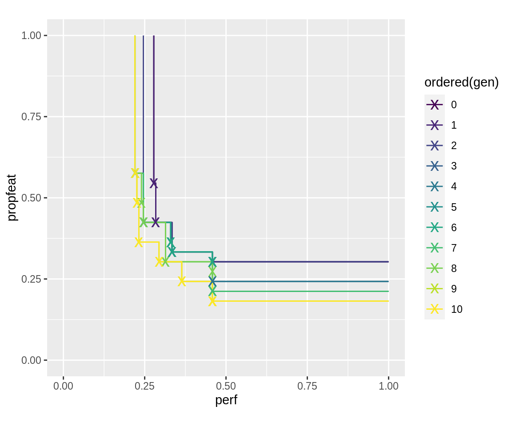
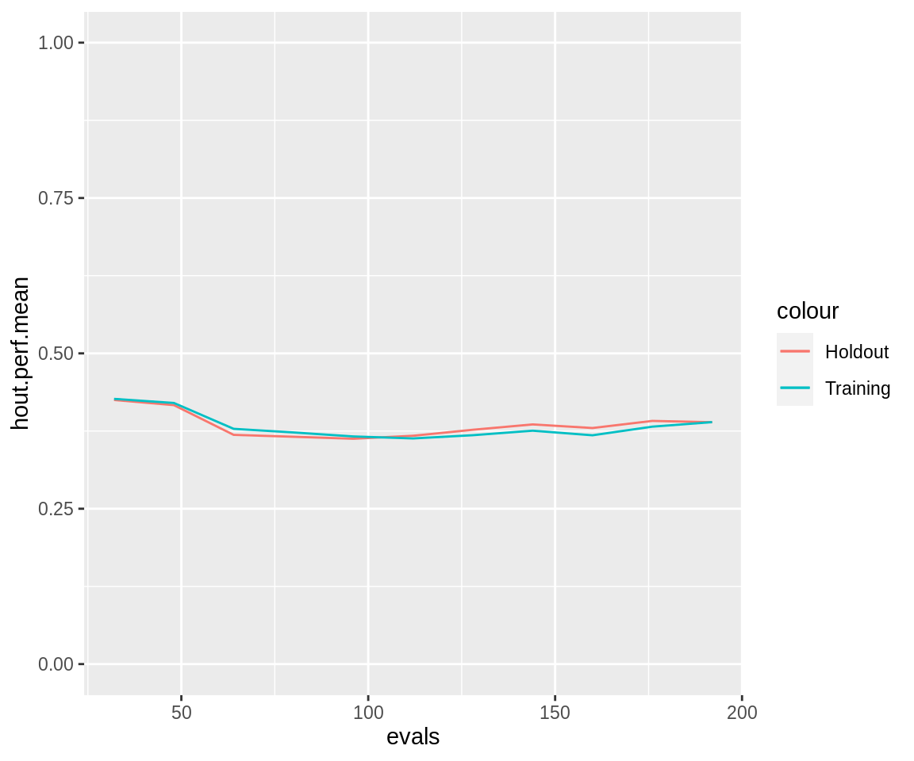
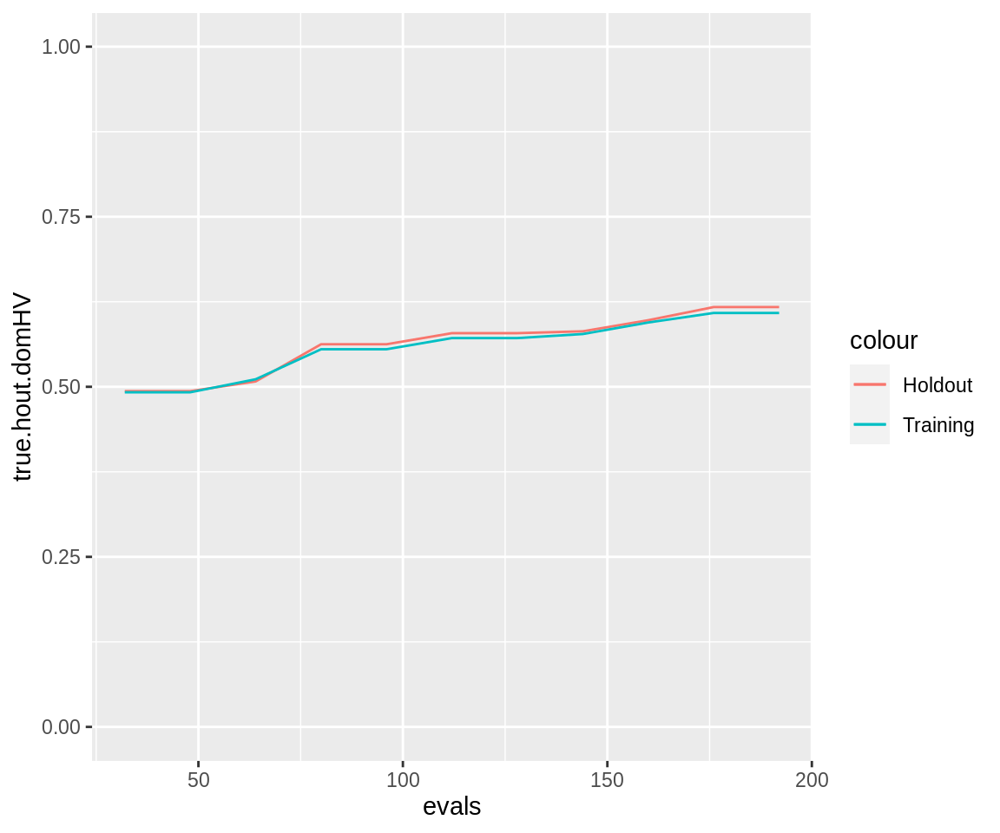
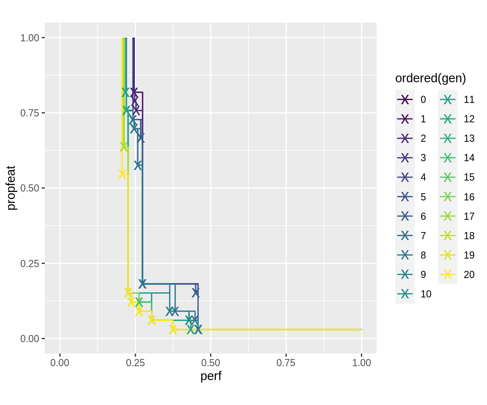

Using MOSMaFS
mosmafs offers a variety of tools that make it possible to use the ecr package for multi-objective optimization of mixed parameter spaces. Mixed here means spaces that both include categorical and numeric hyperparameters. The following (a little contrived) example shows how to use these tools.
mosmafs crucially depends on the ecr package (currently the github-version!), so make sure you have it installed and loaded. Other packages for this example should also be loaded.
Demo Setup
Example Operators
To visualise what is going on, we will introduce a few deterministic operators that perform operations that can be easily understood and followed. These will all be mutation operators; recombination operators work the same but are more annoying to visualize.
The flipflop operator negates all bits of a binary individuum:
mutFlipflop <- makeMutator( mutator = function(ind, ...) { 1 - ind }, supported = "binary") mutFlipflop(c(1, 0, 1)) #> [1] 0 1 0
The cycle operator cycles through the values of a discrete (character) individuum:
mutCycle <- makeMutator( mutator = function(ind, values) { index <- mapply(match, ind, values) index <- index %% viapply(values, length) + 1 mapply(`[[`, values, index) }, supported = "custom") mutCycle(c("a", "x", "z"), values = list(letters)) #> [1] "b" "y" "a"
The plus operator adds a parametervalue (default one) to the value of an individuum.
mutPlus <- makeMutator( mutator = function(ind, summand = 1, ...) { ind + summand }, supported = "custom") mutPlus(c(1, 2, 3)) #> [1] 2 3 4
The reverse operator reverses the order of an individuum:
mutReverse <- makeMutator( mutator = function(ind, ...) { rev(ind) }, supported = "custom") mutReverse(c(1, 2, 3)) #> [1] 3 2 1
Example Datasets
The mosmafs package comes with a few functions that generate synthetic datasets that can be used for feature selection. The following creates three columns of randomly sampled points in the [-1, 1]^3 cube and a target column indicating whether each point is a distance greater than 1 away from the origin. Then ten more copies of that task are added, but with permuted rows—effectively giving 30 noise columns (the piping operator %>% from the magrittr package is used for parsimonity).
To show the holdout prediction functionality, we will retain a part of the task as a “holdout” set.
task.whole <- create.hypersphere.data(3, 2000) %>% create.classif.task(id = "sphere") %>% task.add.permuted.cols(10) rows.whole <- sample(2000) task <- subsetTask(task.whole, rows.whole[1:500]) task.hout <- subsetTask(task.whole, rows.whole[501:2000])
Mixed Operators
The heart of this package is the combine.operators() function that can be used to apply different operators to different parts of the search space; in particular, to different types of search space dimensions. It works by accepting a ParamSet (from the ParamHelpers package) that defines the search-space, and operators that define the operators to use on individual parameters.
Operators for each Parameter
We may have a ParamSet with a logical parameter bin1, a discrete (but binary) parameter bin2, a discrete vector parameter disc1, and a numeric parameter num1. We define this ParamSet using the pSS() function from the excellent mlrCPO package.
ps <- pSS( bin1: logical, bin2: discrete[no, yes], disc1: discrete[letters]^3, num1: numeric[0, 10])
We can now define an operator that uses the mutFlipflop operator on both bin1 and bin2, the mutCycle operator on disc1, and the mutPlus operator on num1:
combo <- combine.operators(ps, bin1 = mutFlipflop, bin2 = mutFlipflop, disc1 = mutCycle, num1 = mutPlus)
Here we are treating bin2 as a binary parameter, so we have to leave the .binary.discrete.as.logical parameter of combine.operators as TRUE. If we wanted to use the mutCycle operation on the bin2 operator, we would have to tell combine.operators() to treat it as a discrete parameter:
combo2 <- combine.operators(ps, bin1 = mutFlipflop, bin2 = mutCycle, disc1 = mutCycle, num1 = mutPlus, .binary.discrete.as.logical = FALSE)
Both these operators do essentially the same: They flip / cycle the binary and discrete parameters, and increase the numeric parameter by one.
Operators for Parameter Types and Groups
Especially with larger parameter spaces it may be more desirable to define operations not for each parameter individually, but for groups of parameters. Groups can be declared by setting the special .params.<GROUPNAME> value to a character vector of parameter values to combine into a group. The special groups numeric, logical, integer, and discrete are pre-defined and group all parameters of a type that are not otherwise given an operator.
combo.group <- combine.operators(ps, .params.group1 = c("bin1", "bin2"), group1 = mutFlipflop, discrete = mutCycle, num1 = mutPlus)
combo.group(list(bin1 = TRUE, bin2 = "no", disc1 = c("a", "x", "z"), num1 = 3)) #> list(bin1 = FALSE, bin2 = "yes", disc1 = c("b", "y", "a"), num1 = 4)
When parameters are put in a group, they are passed to the underlying operators as a vector. This may make a difference if operations depend on the global state of a vector and don’t just operate component-wise. This can be shown with the mutReverse operator, when given for a group vs. when given for parameters individually:
combo.rev.indiv <- combine.operators(ps, bin1 = mutReverse, bin2 = mutReverse, discrete = mutCycle, num1 = mutPlus) combo.rev.group <- combine.operators(ps, .params.group1 = c("bin1", "bin2"), group1 = mutReverse, discrete = mutCycle, num1 = mutPlus)
When applied to bin1 and bin2 individually, the mutReverse operator does not change the values:
combo.rev.indiv(list(bin1 = TRUE, bin2 = "no", disc1 = c("a", "x", "z"), num1 = 3)) #> list(bin1 = TRUE, bin2 = "no", disc1 = c("b", "y", "a"), num1 = 4)
However, when they are in a group, the values of bin1 and bin2 are combined as a vector and given to mutReverse. The TRUE value is given as value 1, the "no" value is given as value 0. They are swapped, and the return list contains bin1 = FALSE and bin2 = "yes":
combo.rev.group(list(bin1 = TRUE, bin2 = "no", disc1 = c("a", "x", "z"), num1 = 3)) #> list(bin1 = FALSE, bin2 = "yes", disc1 = c("b", "y", "a"), num1 = 4)
Because of this, it is usually a bad idea to combine parameters of different types into a single group. Discrete parameters (non-binary discrete parameters if .binary.discrete.as.logical is TRUE) can not be grouped together with other types of parameters.
Strategy Parameters
A further extension offered by the combine.operators() function is the ability to use “strategy parameters”. They make it possible to have the effect of an operator be dependent on the individuals involved. To do this, a .strategy.<PARAMETER/GROUPNAME> value must be given, which should be a function that gets the individuum as input, and returns a named list of function parameters as output. This named list is added to the configuration of the operator associated with <PARAMETER> or <GROUPNAME>.
One could, for example, make the summand parameter of the mutPlus operation dependent on the bin2 value: If it is "yes", it adds a value, if it is "no" it subtracts a value.
combo.strategy <- combine.operators(ps, logical = mutFlipflop, discrete = mutCycle, numeric = mutPlus, .strategy.numeric = function(ind) { if (ind$bin2 == "yes") { return(list(summand = 1)) } else { return(list(summand = -1)) } })
combo.strategy(list(bin1 = TRUE, bin2 = "yes", disc1 = c("a", "x", "z"), num1 = 3)) #> list(bin1 = FALSE, bin2 = "no", disc1 = c("b", "y", "a"), num1 = 4) combo.strategy(list(bin1 = TRUE, bin2 = "no", disc1 = c("a", "x", "z"), num1 = 3)) #> list(bin1 = FALSE, bin2 = "yes", disc1 = c("b", "y", "a"), num1 = 2)
Note how the value of ind$bin2 from before the mutFlipflop operation is used: The value that counts is always the input value given to the operator. It is therefore possible to use the values as strategy parameters for their own mutation.
Recombination Operators
Recombination operators can be combined in the same way that mutation operators can be. The input to a recombination operator is usually a list with two individuals, so the input to the strategy parameter function is also a list with two vectors. This function has to decide whether to construct a strategy depending to one of these individuals, or whether to combine their values, for example averaging them.
Mixed Operator Individuals
When using the ecr package with its vanilla operators, individuals are usually vectors of numbers, for example 0-1-vectors for binary individuals, or numeric values for continuous valued individuals. When using mixed operators, the individuals have to be named lists, with names and types corresponding to the ParamSet given to combine.operators(). The supported Param types, and the expected entries in the individual lists, are the following:
Parameter Construction (ParamHelpers) |
pSS() sugar |
Type Expected |
|---|---|---|
makeNumericParam/makeNumericVectorParam
|
numeric[, ] |
numeric |
makeIntegerParam/makeIntegerVectorParam
|
integer[, ] |
(integer) numeric
|
makeLogicalParam/makeLogicalVectorParam
|
logical |
logical |
makeDiscreteParam/makeDiscreteVectorParam
|
discrete[] |
character |
The only possible surprise here is that individuals must have “character” entries for discrete parameters1. That means, no factor entries, and no lists of characters for makeDiscreteVectorParam() types.
One can use the sampleValue() function from the ParamHelpers package to generate valid, randomly sampled individuals to use with combined operators. The discrete.names option must be set to TRUE for that:
value <- sampleValue(ps, discrete.names = TRUE) print(value) #> list(bin1 = TRUE, bin2 = "no", disc1 = c("y", "g", "y"), num1 = 8.111) combo(value) #> list(bin1 = FALSE, bin2 = "yes", disc1 = c("z", "h", "z"), num1 = 9.111)
GA Application
First Steps
Having a way to use mutation and recombination operators for mixed type individuals is already a big step towards using the ecr package for simultaneous model and feature selection (“SMaFS”). It is still necessary to define the actual objective, for which we need a Learner, a Task, as well as a hyperparameter space to optimize over.
In this example, we choose to optimize the "classif.rpart" learner from the rpart package, on the task defined above.
lrn <- makeLearner("classif.rpart", maxsurrogate = 0)
The parameter set we optimize over is the following
ps.simple <- pSS( maxdepth: integer[1, 30], minsplit: integer[2, 30], cp: numeric[0.001, 0.999])
Furthermore, a resampling strategy must be chosen. It can be either a mlr::ResampleDesc object, mlr::ResampleInst object or any function which maps fidelity to the resampling to use. We use the resampling strategy mlr::cv5.
Now we have all the information needed to define an objective function we try to optimize. If we are doing feature selection, the makeObjective() function does this for us; otherwise we would need to define a “smoof” function using smoof::makeSingleObjectiveFunction() or smoof::makeMultiObjectiveFunction().
The makeObjective() function allows us to supply a holdout dataset on which each model will be evaluated. If a holdout is given, then the resampling is performed as given to the resampling parameter, and, additionally, the given Learner is trained on the whole training data and predicted on the holdout set.
fitness.fun.simple <- makeObjective(lrn, task, ps.simple, cv5, holdout.data = task.hout)
Notably the parameter selector.selection was added within makeObjective() to the parameter set, which controls what features are selected. The new parameter set needs to be used for the definition of the mutators and recombinators.
ps.objective <- getParamSet(fitness.fun.simple)
We are using some standard mutation and recombination operators for the parameters: Gaussian and rounded-gaussian mutation for numeric parameters, hamming weight preserving bitflip for selector.selection, and generally uniform crossover mutation. We use the ecr::setup method to set hyperparameters of some mutation operators.
mutator.simple <- combine.operators(ps.objective, numeric = ecr::setup(mutGauss, sdev = 0.1), integer = ecr::setup(mutGaussInt, sdev = 3), selector.selection = mutBitflipCHW) crossover.simple <- combine.operators(ps.objective, numeric = recPCrossover, integer = recPCrossover, selector.selection = recPCrossover)
The initial population to sample over can be generated using the ParamHelpers function sampleValues(). Note that by generating an initial population of a certain size (32 here), we implicitly determine the ECR hyperparameter mu of individuals in a generation.
initials.simple <- sampleValues(ps.objective , 32, discrete.names = TRUE)
This is all that is necessary, and it can be used to call the ecr() function in the ecr package. The mosmafs package comes with a useful interface that sets some defaults: slickEcr(). The run time, 10 generations, would probably be to short for serious applications, but should be enough for demonstration purposes.
run.simple <- slickEcr( fitness.fun = fitness.fun.simple, lambda = 16, population = initials.simple, mutator = mutator.simple, recombinator = crossover.simple, generations = 10)
There is a multitude of methods for analysing and plotting the result. The following plots the succession of pareto fronts for each generation:
plot_fronts <- function(run) { fronts <- fitnesses(run, function(x) paretoEdges(x, c(1, 1))) ggplot(data = fronts, aes(x = perf, y = propfeat, color = ordered(gen))) + geom_line() + geom_point(data = fronts[fronts$point, ], shape = "x", size = 5) + xlim(0, 1) + ylim(0, 1) + coord_fixed() } plot_fronts(run.simple)

It is possible to inspect the runtimes of individuals, they are stored as attribute "runtime". The aggregated runtime for each generation can also be retrieved from the log.newinds logging object. The runtime of individuals within each generation can also be queried using popAggregate.
populations <- getPopulations(run.simple$log) pop.gen1 <- populations[[1]] individual.1 <- pop.gen1$population[[1]] attr(individual.1, "runtime") #> elapsed #> 0.226764 individual.2 <- pop.gen1$population[[2]] attr(individual.2, "runtime") #> elapsed #> 0.2080401 getStatistics(run.simple$log.newinds) #> gen runtime.mean runtime.sum size population #> 1 0 0.2342009 7.494428 32 init #> 2 1 0.2428753 3.886004 16 offspring #> 3 2 0.2245258 3.592412 16 offspring #> 4 3 0.2196528 3.514444 16 offspring #> 5 4 0.2620204 4.192326 16 offspring #> 6 5 0.2373127 3.797003 16 offspring #> 7 6 0.2400483 3.840772 16 offspring #> 8 7 0.2393781 3.830050 16 offspring #> 9 8 0.2106042 3.369667 16 offspring #> 10 9 0.2444045 3.910472 16 offspring #> 11 10 0.2334951 3.735921 16 offspring
Run statistics about the progress of performance can also be retrieved using the collectResult() function. It creates a large data.frame with many entries. The following plots the progressive average resampling performance, both of the training data and the holdout data.
ggplot(collectResult(run.simple), aes(x = evals)) + geom_line(aes(y = hout.perf.mean, color = "Holdout")) + geom_line(aes(y = eval.perf.mean, color = "Training")) + ylim(0, 1)

Notice the "true.hout.domHV" column which measures the dominated hypervolume on the holdout sample of those points that make up the paretofront on the training sample. It is a more realistic measure of generalization performance than the "hout.domHV" column, which measures dominated hypervolume on the holdout sample of all points in a generation.
ggplot(collectResult(run.simple), aes(x = evals)) + geom_line(aes(y = true.hout.domHV, color = "Holdout")) + geom_line(aes(y = eval.domHV, color = "Training")) + ylim(0, 1)

The totality of information provided by collectResult() can be seen from its column names.
colnames(collectResult(run.simple)) #> [1] "gen" "runtime" "evals" #> [4] "eval.perf.min" "eval.perf.mean" "eval.perf.max" #> [7] "eval.propfeat.min" "eval.propfeat.mean" "eval.propfeat.max" #> [10] "eval.domHV" "hout.perf.min" "hout.perf.mean" #> [13] "hout.perf.max" "hout.propfeat.min" "hout.propfeat.mean" #> [16] "hout.propfeat.max" "hout.domHV" "true.hout.domHV" #> [19] "naive.hout.domHV" "cor.perf" "cor.propfeat"
Filter Values as Strategy Parameters
It is possible to use “Feature Filter” values from mlr feature filters to heuristically guide mutation of the selector.selection bitvector. For this, the filter matrix can be generated using the makeFilterMat() function, with a few features we choose (the github-version of mlr needs to be installed for this: devtools::install_github("mlr-org/mlr")). For demonstration purposes, this contains the useless-in-this-case "variance" Filter that just measures each feature’s variance (to use the relatively good "praznik_JMI" filter it is necessary to install the github-version of mlr, e.g. by using devtools::install_github("mlr-org/mlr")). The "DUMMY" filter does not exist in mlr, it instructs makeFilterMat() to create a constant heuristic. It gives the strategy parameter another degree of freedom with which it can de-emphasize the heuristic in case it performs badly.
filters <- c("praznik_JMI", "auc", "anova.test", "variance", "DUMMY") fima <- makeFilterMat(task, filters = filters)
We now create a ParamSet that includes one strategy parameter “filterweights”, which puts weights on the filter values and thereby controls how strong each one influences the mutation:
ps.strat <- pSS( maxdepth: integer[1, 30], minsplit: integer[2, 30], cp: numeric[0.001, 0.999], filterweights: numeric[0.001, 0.999]^length(filters))
Before mutation and recombination can be defined, the parameter set must be substracted from makeObjective()
fitness.fun.strat <- makeObjective(lrn, task, ps.strat, cv5) ps.strat.obj <- getParamSet(fitness.fun.strat)
The mutation operator must now include information on how to use the strategy parameter. Instead of writing out the function, we are using the helper makeFilterStrategy() that is designed out for this usecase:
mutator.strat <- combine.operators(ps.strat.obj, numeric = ecr::setup(mutGauss, sdev = 0.1), integer = ecr::setup(mutGaussInt, sdev = 3), selector.selection = mutUniformMetaResetSHW, .strategy.selector.selection = makeFilterStrategy( reset.dists = fima, weight.param.name = "filterweights"))
We are going to use the same crossover operator as before, but we have to construct it with the new ParamSet:
crossover.strat <- combine.operators(ps.strat.obj, numeric = recPCrossover, integer = recPCrossover, selector.selection = recPCrossover)
We sample the initial population again using the ParamHelpers function sampleValues() and resample the $selector.selection part using initSelector(). initSelector makes the number of 0s and 1s uniformly distributed, and applies the equilibrium-distribution of mutUniformMetaResetSHW():
initials.strat <- sampleValues(ps.strat.obj, 32, discrete.names = TRUE) %>% initSelector( soften.op = ecr::setup(mutUniformMetaResetSHW, p = 1), soften.op.strategy = makeFilterStrategy(fima, "filterweights"))
These are all preparations needed for a heuristic-backed NSGA2 for feature-selection:
run.strat <- slickEcr( fitness.fun = fitness.fun.strat, lambda = 16, population = initials.strat, mutator = mutator.strat, recombinator = crossover.strat, generations = 10)
The pareto-fronts of this run look as follows:
plot_fronts(run.strat)

Run Continuation
The results returned by slickEcr() contain all information to continue an optimization for more generations. To continue a run, use the continueEcr() function. It is possible to change a few settings compared to the previous invocation of slickEcr() (it is in fact possible to just create a result object without any generations using initEcr(), and then call continueEcr() at a later point on it).
run.strat.20 <- continueEcr(run.strat, 10, lambda = 8)
getStatistics(run.strat.20$log.newinds) #> gen runtime.mean runtime.sum size population #> 1 0 0.2328167 7.450133 32 init #> 2 1 0.2206262 3.530019 16 offspring #> 3 2 0.2484078 3.974524 16 offspring #> 4 3 0.2648093 4.236949 16 offspring #> 5 4 0.2245242 3.592388 16 offspring #> 6 5 0.2571549 4.114479 16 offspring #> 7 6 0.2388807 3.822092 16 offspring #> 8 7 0.2404426 3.847082 16 offspring #> 9 8 0.2266318 3.626109 16 offspring #> 10 9 0.2416093 3.865749 16 offspring #> 11 10 0.2507146 4.011434 16 offspring #> 12 11 0.2239953 1.791962 8 offspring #> 13 12 0.2366085 1.892868 8 offspring #> 14 13 0.2385776 1.908621 8 offspring #> 15 14 0.2427327 1.941862 8 offspring #> 16 15 0.2425791 1.940633 8 offspring #> 17 16 0.2456001 1.964801 8 offspring #> 18 17 0.2540927 2.032742 8 offspring #> 19 18 0.2544738 2.035790 8 offspring #> 20 19 0.2290847 1.832678 8 offspring #> 21 20 0.2320937 1.856750 8 offspring
plot_fronts(run.strat.20)

Things to Keep in Mind
Operators
These operators are supplied by the mosmafs package:
-
mutGaussInt(),mutPolynomialInt(),mutUniformInt(),recIntSBX(): Mutation with rounding, for integer individuals. This is achieved through trivial application ofintifyMutator(). -
mutDoubleGeom(): Geometric distribution mutation, for integer individuals. -
mutRandomChoice(): Mutation for discrete individuals. -
recPCrossover(): Crossover recombination operator for individuals of any type. -
mutBitflipCHW(): Bitflip that approximately conserves hamming weight (sum of digits) of binary individuals in expectation. This is useful for theselector.selectionvector because it does not bias mutation away from the extremes (very few features selected, or very many features selected) as strongly. -
mutUniformReset(): Extension of themutBitflip()operator that draws new values from a distributionreset.dist. -
mutUniformMetaReset(): Extension of themutBitflip()operator that draws new values from a set of distributionreset.dists, weighted by another parameterreset.dist.weights. -
mutGaussScaled(),mutGaussIntScaled(): Gaussian mutation with standard deviation scaled to the range of possible values. -
selTournamentMO(): Multi-Objective k-tournament selection with individual rankging by nondominated sorting and secondarily either crowding distance or contribution to dominated hypervolume. -
mutBitflipCHW(),mutUniformResetSHW(),mutUniformMetaResetSHW(): Binary operators that emulatemutBitflip(),mutUniformReset(), andmutUniformMetaReset()but keep the fraction of ones in the result more constant.
Utility Functions
-
popAggregate(),availableAttributes(): Information aggregated as matrix or dataframe for each generation in a population. -
collectResult(): Information aggregated throughout the run, on runtime and computation cost measures. -
initSelector()Resetting of individual’sselector.selectionslot.
In particular, they must have entries corresponding to the names of the possible values of a discrete parameter. Consider the
ParamSetmakeParamSet(makeDiscreteParam("fn", values = list(a = identity, b = exp))). An individuum corresponding to thisParamSetwould have to be one oflist(fn = "a")orlist(fn = "b").↩